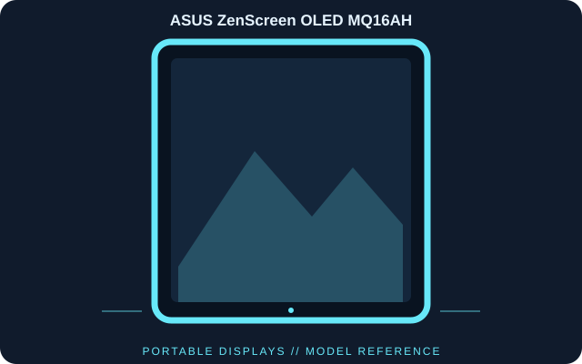

[ INDIVIDUAL COMPONENT // DISPLAYS ]
ASUS ZenScreen OLED MQ16AH
A 15.6-inch Full HD portable OLED display supplied with a protective smart cover and intended for USB-C or HDMI-connected mobile workstations.

IDENTIFICATION: ASUS ZenScreen OLED MQ16AH; 2022 generation. Verify the full model code, region and hardware revision on the unit label. Published specifications describe the identified configuration; its matching manual and label take precedence if revisions differ.
Published specifications
| Catalog subcategory | Portable Displays |
|---|---|
| Exact model | ASUS ZenScreen OLED MQ16AH |
| Panel / native resolution | 15.6-inch OLED, 1920 × 1080 (16:9) |
| Refresh rate / response | 60 Hz; 1 ms GtG (manufacturer rating) |
| Brightness / contrast | 400 cd/m² peak; 100,000:1 typical contrast |
| Color | 100% DCI-P3; factory Delta E < 2 (manufacturer stated) |
| Video inputs | USB-C ports with DisplayPort Alt Mode and mini-HDMI |
| Audio / accessories | Headphone output; smart cover and tripod socket |
| Power | USB-C power input; use the included supply when the host cannot provide sufficient power |
Compatibility & connectivity notes
USB-C video requires DisplayPort Alt Mode; USB-C power is a separate requirement and may need the included adapter. A mini-HDMI source needs an HDMI-to-mini-HDMI cable and separate power. It has no internal battery, and touchscreen input is not a feature. Protect the OLED surface and use ASUS panel-care guidance.
Preservation notes
Record the complete model suffix, serial/date code, input selection, source device, cable or adapter, tested timing and observed condition. Retain the matching regional manual and any calibration or service records with the display. Follow the manufacturer’s cleaning and service instructions; do not open CRT equipment without appropriate high-voltage training.
Manufacturer documentation & authoritative sources
- ASUS — ZenScreen OLED MQ16AH technical specificationsManufacturer documentation and model-specific reference.
- ASUS — MQ16AH support and manualsManufacturer documentation and model-specific reference.